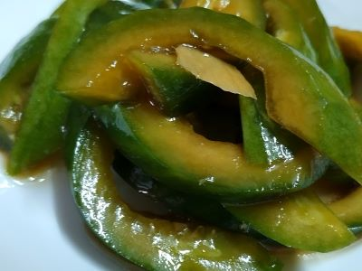
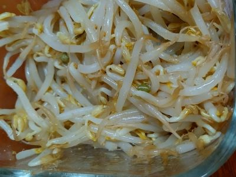

大根漬物

作り方
- 大根を5cm幅ぐらいふと目に切って皮をむき、半月の形に半分に切る。
- ジップロックに大根と調味料の塩 砂糖 酢を入れて、もんでから冷蔵庫に一晩おく。
きゅうり醤油漬け

作り方
- きゅうりを縦半分に切って中の種など水分をスプーンで取り除く。
- ペーパータオルで水分をふき取って斜めに5mm幅ぐらいに切っていく。
- 保存容器に２を入れて調味料のしょうが 砂糖 醤油 酢 ごま油を加えて混ぜて一晩おく。
調味料
- しょうが
- 小1 (5g)
- 砂糖
- 9g
- 醤油
- 36g
- 酢
- 30g
- ごま油
- 4g
白菜漬け
作り方
- 白菜を芯と葉の部分にわけて切る。芯は縦に5mm幅ぐらいに、葉は1-2cm幅に切る。
- 長ねぎは縦に千切りする。
- 保存容器に１にごま油以外の調味料(しょうが 砂糖 醤油 酢)を加えてから２を入れて混ぜる。
- ごま油を小さい鍋で温めて３にかける。
- 全てかき混ぜてから一晩おく。
調味料
- しょうが
- 小1 (5g)
- 砂糖
- 9g
- 醤油
- 18g
- 酢
- 30g
- ごま油
- 12g
もやしのナムル

作り方
- 熱湯にもやしを入れて1分ぐらい軽く火を通す。
- ざるにあげて10分ぐらい粗熱を取る。
- 保存容器に２をいれてごまと調味料(醤油 ごま油 鶏がらスープの素)を加えて混ぜる。
調味料
- 醤油
- 小2 (12g)
- ごま油
- 小2 (8g)
- 鶏がらスープの素
- 小1